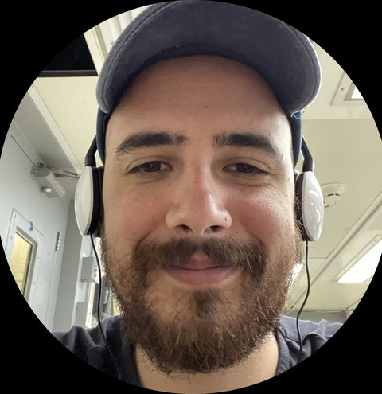

Bridging microbial ecology, metagenomics and space science — from deep-sea hydrothermal vents to Martian analogues.
→ Research Fellow, CNR-IRSA — Roma Montelibretti
I am a computational biologist driven by a single question: how does life adapt to the most extreme conditions on Earth — and what does that tell us about the possibility of life elsewhere? I build bioinformatic tools and pipelines to decode microbial communities, then apply them to environments that push biology to its limits — from deep-sea hydrothermal vents to hypersaline planetary analogues.
Currently a Research Fellow at CNR, my work combines field campaigns — including a dive at 2,518 metres aboard the HOV Alvin — with high-performance computational analysis. I am also increasingly interested in the theoretical principles that govern how microbial communities sustain cooperation and stability under extreme energetic constraints.
Characterising microbial communities in extreme and aquatic environments — from constructed wetlands and coastal aquifers to deep-sea hydrothermal vents — using 16S rRNA sequencing and whole-metagenome approaches.
Investigating hypersaline and geochemically extreme environments as analogues for Mars and other planetary bodies, with a focus on biosignature formation and the potential for life in extreme conditions.
Designing and maintaining flexible, reproducible pipelines and R packages for metagenomic analysis, spatial transcriptomics, and biological network visualisation — built for scientists without deep computational backgrounds.
Applying satellite remote sensing, geospatial analysis and climate system monitoring to environmental research, integrating orbital data with ground-truth biological and geochemical observations.
A flexible metagenomic pipeline combining read-based analysis, assemblies and MAGs with downstream biological and geochemical data integration. Designed for reproducibility and ease of use without deep bioinformatic expertise.
An R package for multivariate data range visualisation, displaying 3–6 variables simultaneously with min/max and mean for each — ideal for comparing environmental profiles across sampling sites.
An R/Bioconductor wrapper for the SpatialDE Python library, enabling identification of spatially variable genes in spatial transcriptomics data directly from R with a native Bioconductor interface.
A web application for interactive visualisation of biological regulatory networks, combining multiple layout algorithms and network types to highlight functional modules within biological pathways.
An expression knowledgebase at single cell and nucleus level for the discovery of coding–noncoding RNA functional interactions in skeletal muscle, integrating miRNA, lncRNA and mRNA co-regulation networks.
I am open to research collaborations, consulting opportunities in bioinformatics and space science, and invitations to speak or teach. If you are working on something at the intersection of computational biology, microbial ecology, or astrobiology — I would love to hear from you.
Send an Email